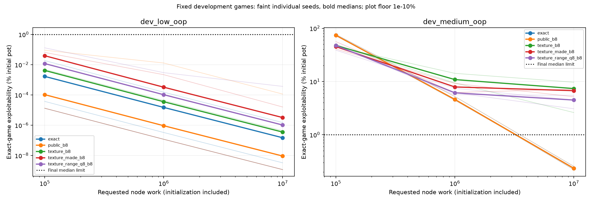

Poker AI: Learning and Evaluating Strategies Under Imperfect Information
I am building a poker AI research system from the cards and game engine upward, with an emphasis on game theory, statistical evaluation, and reproducible experiments. The central question is how to learn useful strategies when a player sees only part of the game state—and how to tell whether a measured improvement is real.
The project now includes a Hold’em engine, counterfactual regret minimization (CFR) solvers, sampled self-play, card and action abstractions, and evaluation tools. Recent work investigates which information a compressed strategy loses, and how training choices interact with that representation.
RepositoryLearning journalExperiment log
Progress snapshot from repository revision ca0b555. The figures and measurements below come from committed experiment reports. Competitive full-game playing strength has not yet been established.
Building a trustworthy foundation
Strategy results depend on the mechanics beneath them. I implemented card encodings, an immutable deck, hand evaluation, equity calculation, and a two-to-six-seat Hold’em engine, then checked them against independent implementations.
- Five-card evaluation: all 2,598,960 possible hands checked against Treys, with zero disagreements across 7,462 distinct ranks.
- Best-five selection: two million seeded six- and seven-card hands checked against Treys, with zero disagreements. These are sampled checks rather than exhaustive coverage.
- Game mechanics: 1,000 seeded independent traces covering 10,039 actions and 471 side-pot hands, with no unexplained mismatches within the documented comparison scope.
The engine checks shared actions and rational terminal shares; differences involving short blinds, short raises, free folds, and integer rounding are documented explicitly. Engine validation and scope.
Learning strategies through self-play
CFR updates a strategy using the regret associated with actions it could have taken. Repeated self-play produces an average strategy; sampled variants reduce the cost of traversing the game tree. I implemented exact CFR, CFR+, Linear CFR, and Discounted CFR, followed by external- and outcome-sampling methods.
On the smaller Kuhn and Leduc poker games, matched-iteration exploitability agreed with OpenSpiel to a maximum discrepancy of 1.39 × 10−16 ante chips per hand. These comparisons validate the solver implementation on those games. OpenSpiel supplies independent comparison values; its strategies are not used to train my learners.
Exploitability measures how much an optimal counterstrategy can gain against a saved strategy. The reports use NashConv/2; restricted Hold’em studies normalize it by the initial pot. Lower values are better. This metric is different from a win rate against a particular opponent.

A later procedure check froze the training method and inputs before separately training four fresh restricted turn–river games. All four met the declared final accuracy and average-coverage limits at ten million node-work; the closest case reached median exploitability of 0.9670% of the pot against a 1% median limit. Each game had only two physical combinations per seat and three fixed training seeds. This tests the procedure across new small games, rather than one policy generalizing to unseen boards. Frozen protocol and results.
Which distinctions can a strategy afford to lose?
A full poker state space is too large to enumerate directly. An abstraction groups situations under a shared strategy entry. The challenge is preserving strategically relevant differences: board texture, relative hand strength, and blockers can change the best action even when two hands share a broad category.
I compared representations at fixed computational work, retained failed candidates, and used saved-policy response analysis to find concrete merged decisions that require different treatment. A coarse texture representation reduced strategy rows from 3,336 to 1,392 in one medium development game, but raised final median exploitability from 0.234% to 7.37% of the pot.
A richer range-mass representation incorporates how a hand fares against the configured opponent range. At 4,096 full-tree iterations it reduced that game’s exploitability from the made-category representation’s 2.593658% to 0.271640%. The next test asked whether this gain survived sampled learning at matched work.
| Representation | Median | Worst seed |
|---|---|---|
| Exact / raw public | 0.233819% | 0.254711% |
| Coarse texture | 7.369740% | 9.687540% |
| Texture + made-hand category | 6.722860% | 7.188980% |
| Texture + range mass | 4.480481% | 5.506634% |

The result separates two questions: whether the representation can express a strong strategy, and whether the sampled training procedure learns one at the allotted work. Fewer strategy rows also do not automatically mean lower total memory use; longer feature keys have their own storage cost.
Diagnosing the remaining strategy gap
I analyzed saved policies with best responses, separated gains available within the compressed information partition from gains requiring exact information, and swapped saved turn and river continuations while holding opponents fixed. These interventions located much of the measured gap change in the river continuation.
The follow-up controlled comparison covers 140 runs and 840 checkpoints across two known games, exact and range-mass representations, full and sampled traversal, signed and clipped regrets, and uniform and linear weighting. Replay error was zero; independent value and response checks agreed within 1.71 × 10−13 chips.
In the medium range-mass game, with linear regret weighting at the ten-million-work label, clipping changed mean exploitability from 4.354032% to 2.501852% under linear strategy averaging. Under uniform averaging, the direction reversed: signed regrets reached 2.664089%, compared with 3.525759% for clipped regrets. This interaction makes averaging and clipping important experimental controls. These are known-game diagnostic results; the study did not select or deploy a new default recipe.
Controlled comparison · Complete endpoint tables · Saved-policy follow-up
Evaluating matches without overstating strength
A separate evaluation contains 36,000 simulated hands against six fixed opponents using three frozen training seeds. It reuses 1,000 independently drawn decks across both seats and policies to reduce variance. The independent statistical units are the deck clusters, not all 36,000 hands.

The project also includes Bayesian opponent models on toy games and conditional bankroll-risk studies. These extend the statistical analysis without establishing a positive real-world poker edge. Current gameplay work uses simulation and permitted public bot benchmarks.
Each study retains its inputs, seeds, frozen policies, checks, and report-generation commands. The linked repository tracks ongoing progress beyond this snapshot; the learning journal explains how the questions and experiments developed.